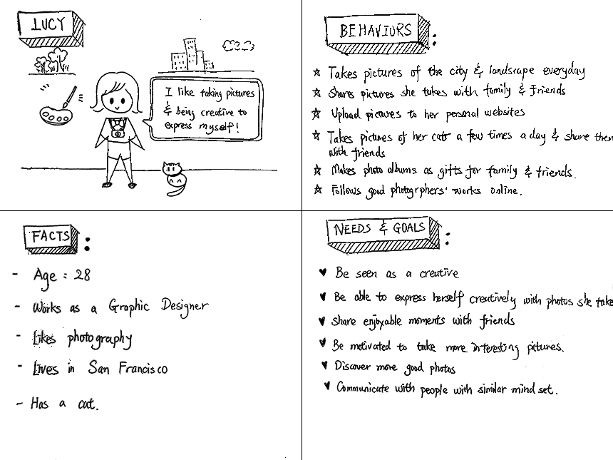
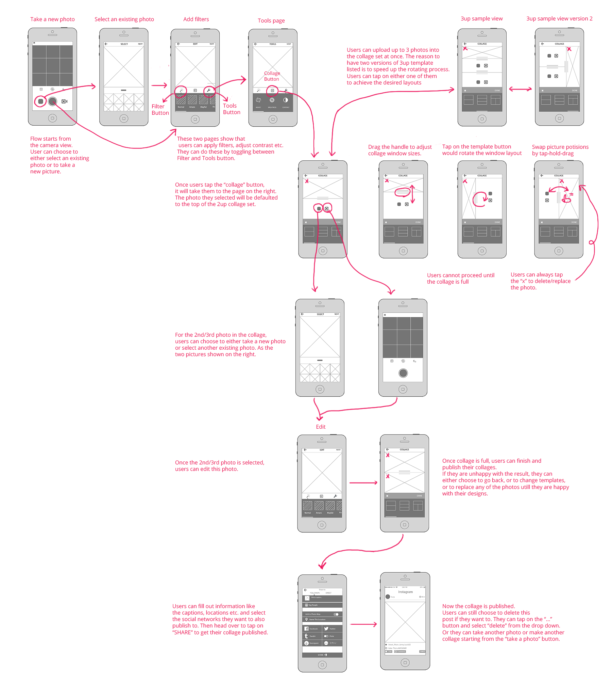

Instagram is a popular social media app that allows users to share interesting photos with the world. As a design challenge, I researched, ideated, wireframed, and prototyped a potential feature that Instagram users would like to have. This feature is simple to use, streamlined with the updated Instagram UI. The new feature is "to create photo collages" in Instagram. It gives users more freedom to capture the moments they love.
To try and understand the person you are designing for, you want to create a persona. Below is the persona that I created this photo collage feature for. It helped me to focus my project and not add unnecessary features.
Considering that this "photo collage" feature could start from various places in the app, I had thought about where to place it for a long time. Based on my understanding and my personal experience, I define Instagram as more of a camera, rather than a photo editing app. That being said, I chose to add my feature inside Instagram's "Tool" section. The user flow chart is listed as below. The highlighted steps are what I designed specifically for this feature.

My next step was starting to visualize the flow that I made. I started with sketches on paper. I had total of 3 versions. Based on my pre-assumpition mentioned earlier, I chose this one as show below to further develope.

Below are the detailed wireframes that were developed based on the sketches above.
I have already tested my low fidelity wireframes, so I created a quick high fidelity prototype in cluid to test these wireframes. It is to figure out if the flows do work with users, and to catch any errors. I am going to do more usability test after this to validate my design -- whether or not it works.
Below is a video demonstrating how users could use this photo collage feature in Instagram with one workflow.
InstagramNewFeatureUpdate from Lin Wang on Vimeo.
Follow me on @_LinWang